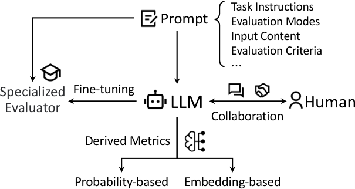

Computational Linguistics 2025NLG evaluation · Survey
LLM-based NLG Evaluation: Current Status and Challenges
LLMs can evaluate generated text in several distinct ways. This survey organizes the methods and explains the reliability, cost, and control trade-offs behind each choice.
- Result
- No paradigm wins on every axis: human–LLM collaboration is most flexible and strongest on SummEval but least reproducible and costliest; LLM-derived metrics are reproducible and cheap but least flexible.
- New vs prior
- Earlier surveys cover automatic metrics or human evaluation practice (Celikyilmaz, Clark, and Gao 2020; Gehrmann, Clark, and Sellam 2023); this survey covers LLM-based NLG evaluation, not evaluation of LLMs' abilities.
- Limitation
- Coverage ends in June 2024, and the cross-paradigm performance comparison rests on one summarization benchmark, SummEval, because fine-tuned evaluators were tested under incomparable settings.

Choosing an evaluator also chooses what quality means
A generated answer can be fluent, relevant, and complete, yet factually wrong; many outputs can be valid, and users value different qualities. The survey therefore asks how an LLM's score is obtained, what information supports it, and which assumptions the procedure hides.
Likelihood scoring asks whether text is probable under a model; a prompted judge applies an explicit rubric; a fine-tuned evaluator learns from example judgments; human–LLM collaboration keeps people in charge of criteria or final checks. The same underlying model can therefore measure different things, and the taxonomy makes that choice visible.
Closest prior work
Earlier surveys review automatic NLG metrics or human evaluation practice (Celikyilmaz, Clark, and Gao 2020; Sai, Mohankumar, and Khapra 2023; Gehrmann, Clark, and Sellam 2023), and the authors note that none addresses LLM-based evaluation. Surveys on evaluating LLMs' capabilities (Zhuang et al. 2023; Chang et al. 2024) answer a different question and are excluded. This survey instead organizes about 100 works that use LLMs as evaluators into four paradigms and compares them on flexibility, reproducibility, performance, and cost.
LLM judges carry documented biases, and no paradigm wins on every axis
Survey · Sections 2–6 and Tables 2–4
Which paradigm fits your evaluation?
The survey’s four paradigms side by side: where the score comes from, whether a reference or training is needed, what the evaluator returns, representative methods and the main failure mode, each with the section it condenses. Select the situations that apply to you: the table marks the paradigms that fit, fit with a caveat, or are ruled out, and lists the survey’s reasons. The Section 6.2 orderings and the SummEval results of Table 4 show what each choice trades away.
Situations combine: a paradigm keeps the strictest status any selected situation gives it, and every reason is listed with its section.
| Property | LLM-derived metrics §2Flexibility: 4th | Prompting LLMs §3Flexibility: 2nd | Fine-tuning LLMs §4Flexibility: 3rd | Human–LLM collaboration §5Flexibility: 1st |
|---|---|---|---|---|
| Signal source | Embeddings or token probabilities of an LLM, used directly or as the change in probability under altered inputs (§2.1–2.2) | A judgment the LLM writes, given instructions, criteria and the input content in a prompt (§3) | An open LLM trained on evaluation data, annotated mostly by GPT-4 and sometimes by humans (Table 2) | People and an LLM together: people guide the LLM’s evaluation, or the LLM assists human evaluators (§5.1–5.2) |
| Needs a reference? | Often not: unlike BERTScore-style metrics, many LLM embedding metrics need no reference (§2.1) | Optional: references, sources or facts are added when the criterion needs them; GPT-4 without references beat reference-based MT metrics (§3.3) | Depends on the evaluator: Prometheus, Prometheus 2 and INSTRUCTSCORE require one, CritiqueLLM and JudgeLM are flexible, the other seven do not (Table 3) | Not discussed as a property of this paradigm (§5) |
| Needs training? | No; existing models are used unchanged (§6.2) | No; existing models are used unchanged (§6.2) | Yes: an extra training cost, repeated from scratch for each new foundation model (§4.4, §6.2) | Not the main cost; human experts take part in each task (§6.2) |
| Output | A number transformed from embeddings or probabilities (§3) | Scores, pairwise comparisons, rankings, yes/no answers or error analyses, often with explanations (§3.1–3.2) | Scores, comparisons, overall judgments or MQM-style error analyses, each with reasons (Table 3) | Checklist scores and explanations revised by people, test cases, audits or critiques (§5.1–5.2) |
| Representative methods | GPTScore, Es et al. (2023), Murugadoss et al. (2024), FFLM, DELTASCORE (§2.1–2.2) | Kocmi and Federmann (2023a, 2023b), GPTRank, BooookScore, ChatEval, Branch-Solve-Merge; G-Eval in Table 4 (§3.1, §3.5) | PandaLM, Prometheus, Prometheus 2, Shepherd, TIGERScore, INSTRUCTSCORE, Auto-J, CritiqueLLM, JudgeLM, Themis, CompassJudger-1, Self-Taught (§4) | COEVAL, InteractEval, HMCEval, EvalAssist, AdaTest, AdaTest++ (§5.1–5.2) |
| Main failure mode | Fails stress tests, costs more compute than traditional metrics, can carry social bias, and cannot use closed models that hide logits (§2.3) | Position, length and self-preference biases; rates factually wrong answers above short or ungrammatical ones; high-score bias in non-Latin languages; proprietary models may not reproduce (§3.6) | Keeps GPT-4 biases such as self-bias; asking for too many evaluation settings can make training fail; results are hard to compare across papers (§4.4) | Sensitive to prompt wording, weak confidence calibration, and human oversight is still needed (§5.3) |
| Best SummEval overall | 0.436 GPTScore (Qwen-2.5)range 0.324–0.436 over 6 rows (Table 4) | 0.523 G-Eval (GPT-4)range 0.409–0.523 over 5 rows (Table 4) | 0.553 Themisrange 0.258–0.553 over 5 rows (Table 4) | 0.725 InteractEval (GPT-4 2nd)range 0.638–0.725 over 4 rows (Table 4) |
Published · Sections 2–6, Tables 2–4 each cell condenses the cited part of the survey. Measured · Table 4 SummEval overall correlation, as printed; some rows come from Fu et al. (2023a), Hu et al. (2024) and Chu, Kim, and Yi (2025).
The survey’s own comparison (§6.2)
- FlexibilityHuman–LLM collaboration > Prompting LLMs > Fine-tuning LLMs > LLM-derived metrics
- ReproducibilityLLM-derived metrics ≈ Prompting LLMs > Fine-tuning LLMs > Human–LLM collaboration
- PerformanceHuman–LLM collaboration > Fine-tuning LLMs ≈ Prompting LLMs > LLM-derived metrics
- CostLLM-derived metrics ≈ Prompting LLMs (open-source LLM) < Fine-tuning LLMs ≈ Prompting LLMs (proprietary LLM) < Human–LLM collaboration
People provide the most flexibility; LLM-derived metrics do not fully allow criteria in natural language; proprietary prompted models follow instructions better than smaller open models.
No situation selected; every paradigm is shown. Flexibility (§6.2): Human–LLM collaboration > Prompting LLMs > Fine-tuning LLMs > LLM-derived metrics.
Published: every cell condenses the cited section or table of the survey (Computational Linguistics 51(2), 2025); the representative methods are those the survey names. Measured: SummEval overall correlations from Table 4, which collects results from Fu et al. (2023a), Hu et al. (2024) and Chu, Kim, and Yi (2025). The situation rules are our mapping of the survey’s statements onto a decision aid; the survey itself compares the paradigms only by flexibility, reproducibility, performance and cost (Section 6.2), and its performance ordering rests on SummEval alone.Survey · Sections 2–6 ↗
Prompted judges are swayed by the order of two texts in a comparison (position bias), prefer longer responses and their own outputs, and can rate a factually wrong answer above a short or ungrammatical one (Section 3.6). Fine-tuning can counter some of these, for example by shuffling training pairs, but GPT-4-annotated data can pass GPT-4's self-bias to the smaller evaluator (Section 4.4).
SummEval is the one benchmark on which the survey compares all four paradigms (Table 4): the best LLM-derived metric (GPTScore with Qwen-2.5) reaches 0.436 overall, G-Eval with GPT-4 0.523, Themis 0.553 as the only fine-tuned evaluator above G-Eval, and InteractEval's human–LLM checklists 0.725. Because fine-tuned evaluators were tested on different settings and data, the survey calls for unified benchmarks with large-scale human judgments (Section 6.3).
Scope. The survey covers about 100 works found through June 2024, limited to LLMs with more than one billion parameters on tasks whose input and output are natural language. It excludes evaluation of LLM capabilities, NLG datasets and benchmarks, and statistical analysis of metrics. Read the study ↗
Read the abstract
Evaluating natural language generation (NLG) is a vital but challenging problem in natural language processing. Traditional evaluation metrics mainly capturing content (e.g., n-gram) overlap between system outputs and references are far from satisfactory, and large language models (LLMs) such as ChatGPT have demonstrated great potential in NLG evaluation in recent years. Various automatic evaluation methods based on LLMs have been proposed, including metrics derived from LLMs, prompting LLMs, fine-tuning LLMs, and human–LLM collaborative evaluation. In this survey, we first give a taxonomy of LLM-based NLG evaluation methods, and discuss their pros and cons, respectively. Lastly, we discuss several open problems in this area and point out future research directions.
Full paper ↗Citation BibTeX
@article{gao-etal-2025-llm,
title = {LLM-based NLG Evaluation: Current Status and Challenges},
author = {Gao, Mingqi and Hu, Xinyu and Yin, Xunjian and Ruan, Jie and Pu, Xiao and Wan, Xiaojun},
journal = {Computational Linguistics},
volume = {51},
number = {2},
year = {2025},
pages = {661--687},
doi = {10.1162/coli_a_00561},
url = {https://aclanthology.org/2025.cl-2.9/}
}